The first ten minutes of Thurbox — from an empty screen to two coding agents running side by side, each on its own git worktree, plus the handful of commands you will use every day.
Every screenshot below is the real TUI, captured by driving it through this exact sequence
(scripts/demo/record-tutorial.sh in the repository). The paths in them
(/tmp/tutorial-home/code/…) come from the throwaway sandbox the capture runs
in; yours will be your own ~/code, ~/src, or wherever you keep
repositories.
Install Thurbox — both the TUI and the headless companion binary:
curl -fsSL https://raw.githubusercontent.com/Thurbeen/thurbox/main/scripts/install.sh | shWindows, Homebrew, AUR, winget and Chocolatey are on the Installation page. You also need:
claude, codex,
agy, opencode, aider, copilot, …
Thurbox launches whichever you have; it is not tied to any of them
Nothing to configure. On first launch Thurbox seeds ~/.config/thurbox/ with the agents
it knows, the themes, and the interface itself.
thurbox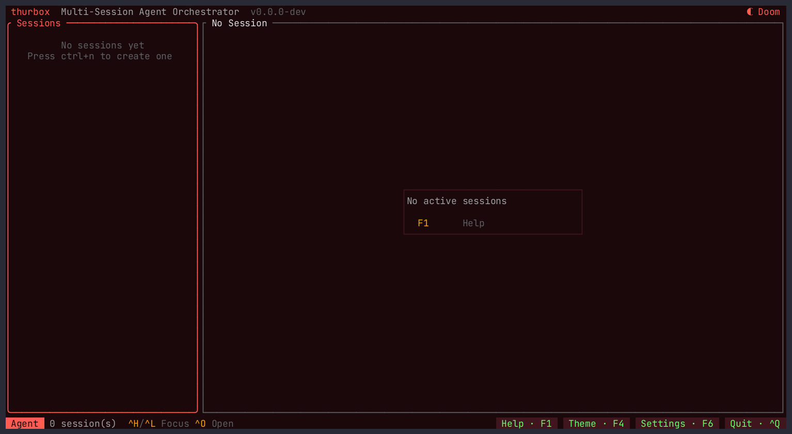
Two panes between two bars: the session list on the left, the agent terminal on the right, and the keys you need on the footer.
Ctrl+N — open the creation flow
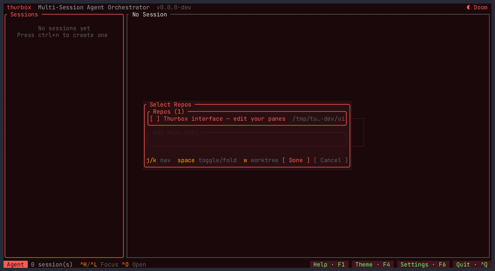
The list is Thurbox's repo memory — the repositories you have used before. The one row already there is your own interface directory, offered because editing the panes is a thing you might want a session for.
To add a repository, press Tab to move to the Add Repo Path field and
type a path. ~ is expanded for you.
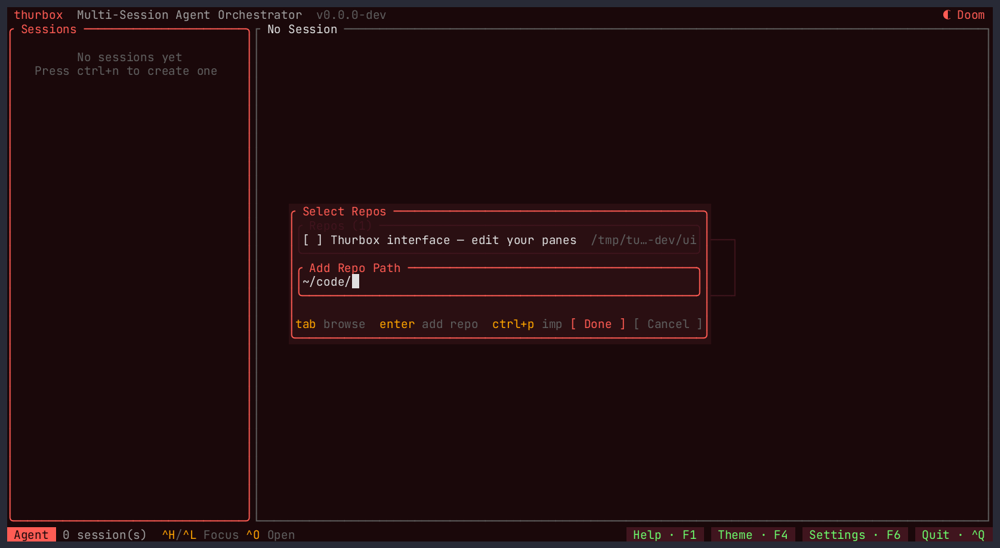
Two ways to finish:
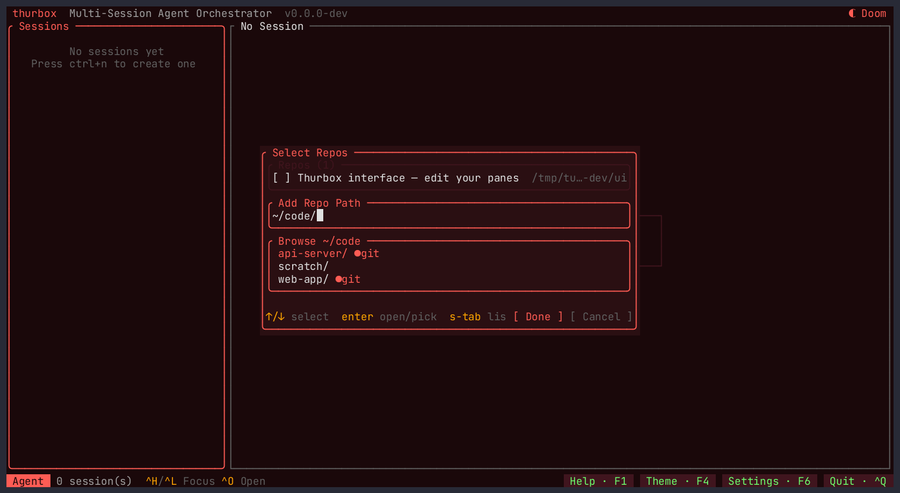
~/code. ↑/↓ move; Enter on a
●git row picks it, on a plain folder descends into it.
Either way the repository lands in memory, selected, with the cursor on it — and stays there for next time.
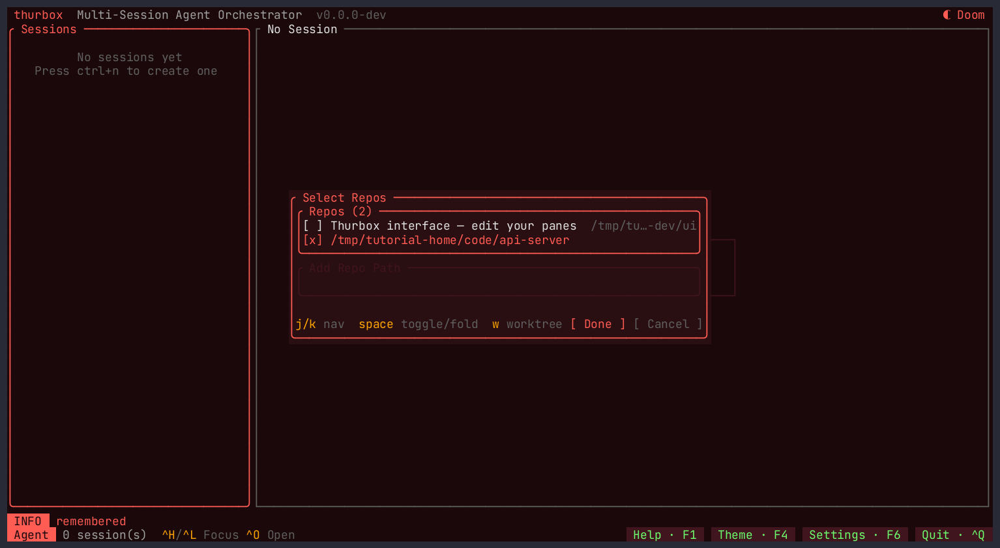
The rest of what this step can do, all on the list:
| Key | Does |
|---|---|
| Space | Select / deselect a repository — select several for a multi-repo session |
| w | Give the selected repository its own worktree |
| / | Filter a long list |
| d | Forget a remembered repository |
| Alt+P | Import a folder of repositories at once — type a parent path, press it, and every git subdirectory is added under one header |
| Tab | Move between the list and the path field |
w — worktree mode on the selected repository
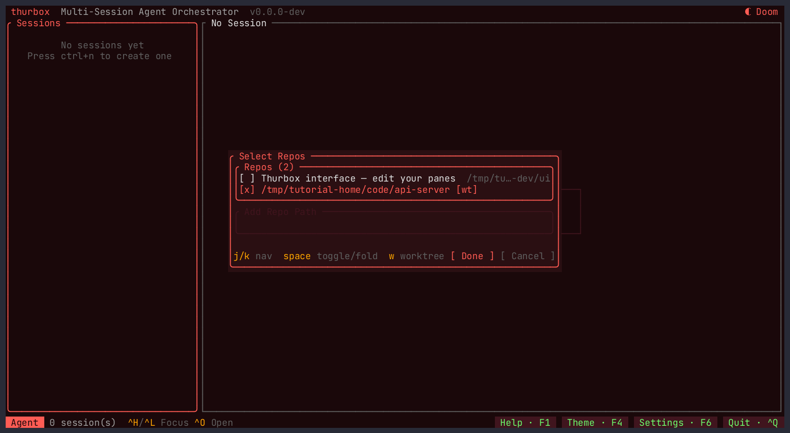
[wt] — this session gets a git worktree of its own, not your checkout.
The agent works on its own branch, in its own directory, and your working tree is untouched. Press Enter when the selection is right. Because a worktree needs something to branch from, the next step asks which branch:
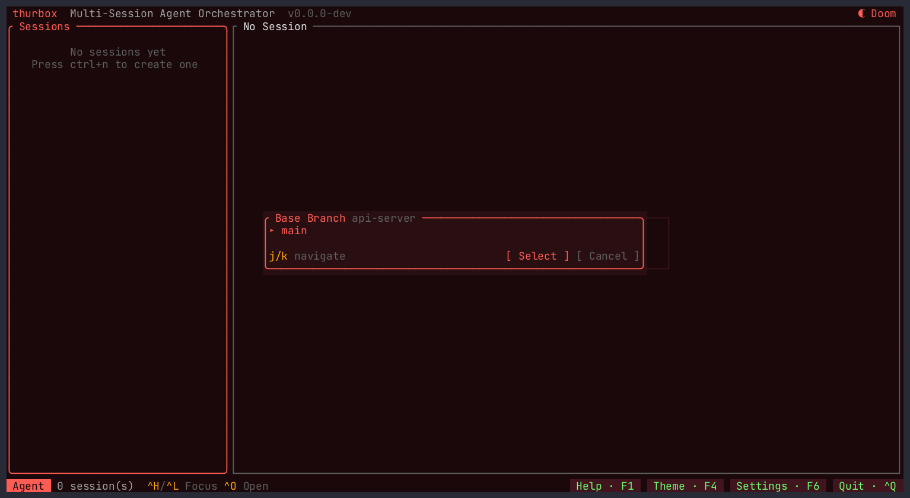
Name the session after the work, not the tool — the list reads as a backlog that way. Enter on an empty field accepts the suggested name (the repository's own), so you can press straight through.
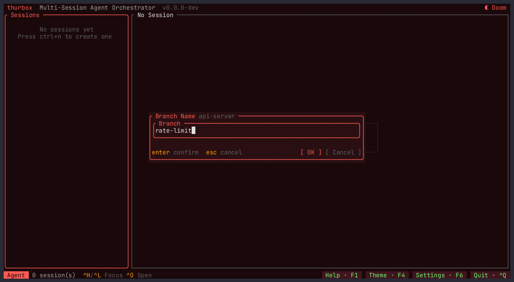
Then the agent. This is the list from ~/.config/thurbox/agents.toml — the
built-ins Thurbox seeds, plus any CLI you have described yourself. With only one agent defined,
the step is skipped.
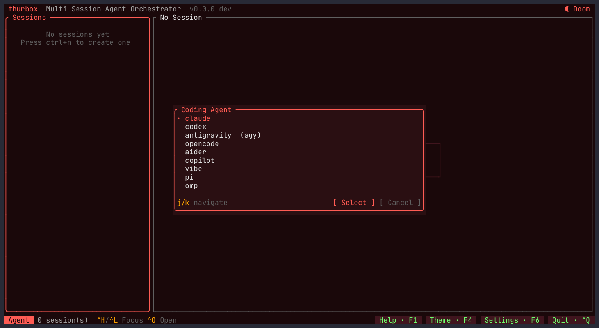
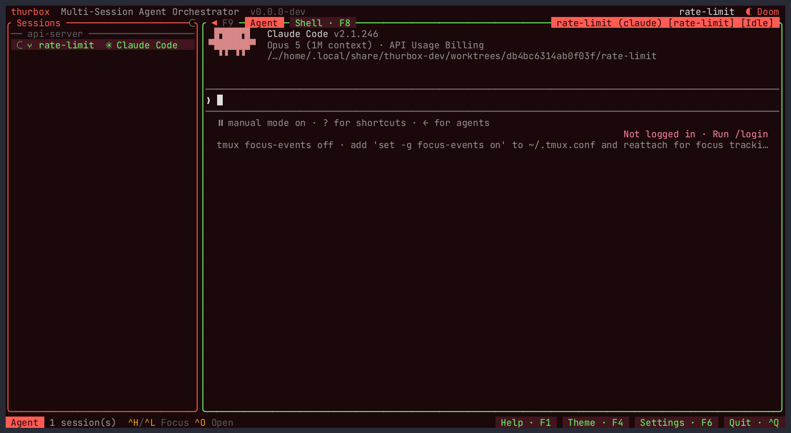
⑂
worktree mark, its agent, and a status dot
Press Ctrl+Q whenever you like: it detaches. tmux keeps every agent running,
and relaunching thurbox puts you back where you were — after a crash, a reboot,
or a week away.
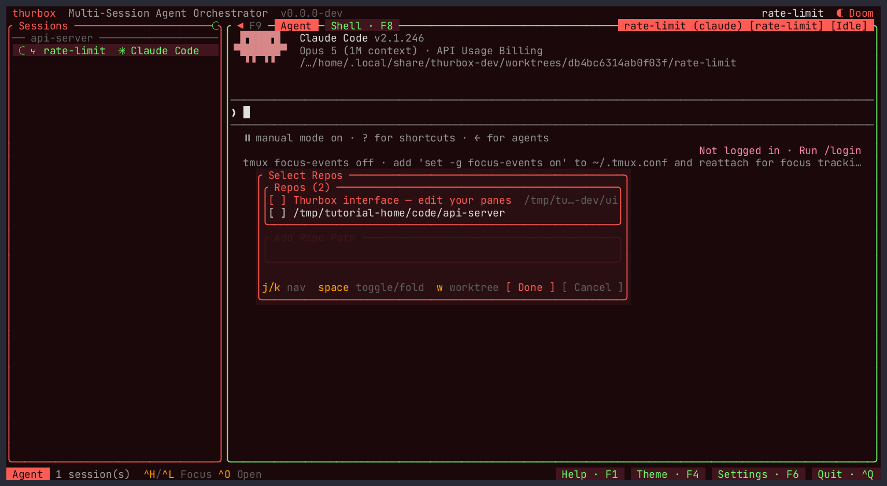
That is the shape of a working day — one session per piece of work, each on its own branch, all alive at once.
The authoritative list is F1 (or Ctrl+G), which renders the live key registry, so it can never drift from what is actually bound. Every chord in it is rebindable from that screen; the full reference is Keybindings.
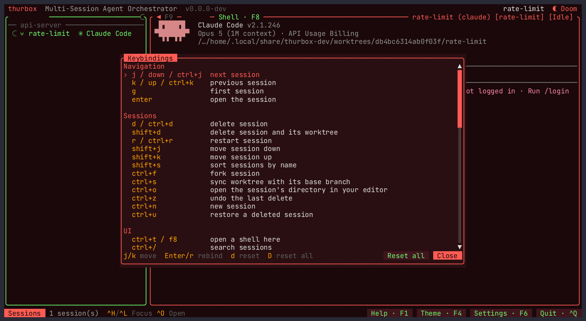
| Key | Action |
|---|---|
| Ctrl+N | New session |
| Ctrl+J / Ctrl+K | Select the next / previous session |
| Ctrl+H / Ctrl+L | Move focus between panes — the way out of a focused agent |
| Ctrl+/ | Search sessions and the text on their screens |
| Ctrl+O | Open the session's directory in your editor |
| Ctrl+T or F8 | A shell in the session's directory |
| Ctrl+F | Fork the session — same repo, branch and agent, with the conversation carried over and the source recorded as its parent |
| Ctrl+S | Sync the worktree with its base branch |
| Ctrl+D | Delete the session (Ctrl+Z undoes it) |
| Ctrl+U | Restore a deleted session |
| Ctrl+Y or F4 | Theme picker — 36 palettes |
| Ctrl+, or F6 | Settings — ] for the Interface tab |
| F10 | Reload the interface from disk |
| Ctrl+Q | Quit, leaving every agent running |
Ctrl+/ is the one to remember when the list gets long: it matches names, agents, branches and repositories — and the text on each session's screen, which is how you find the session with the error in it. Matches highlight inside the panes rather than being reprinted.
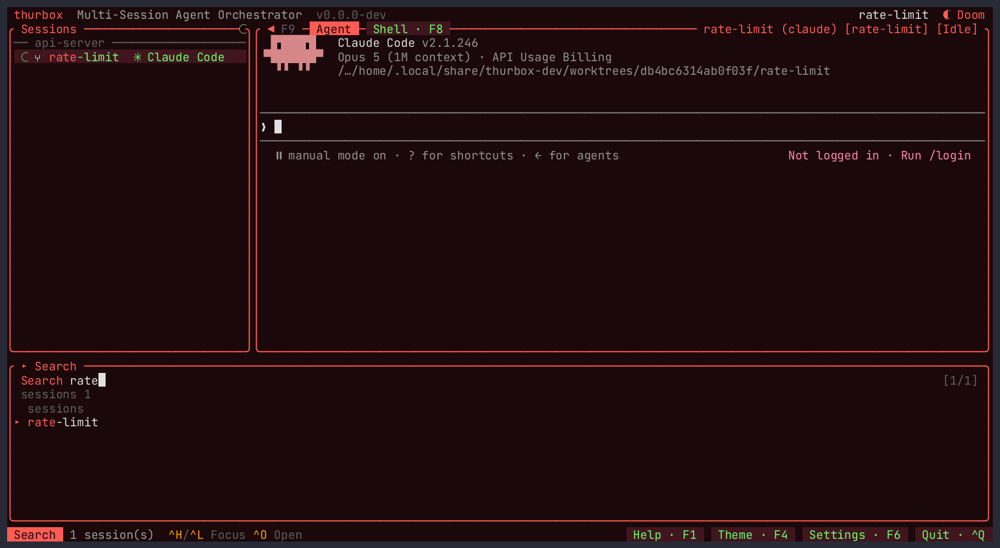
thurbox-cli drives the same sessions with no TUI, against the same database — so
anything you do here shows up in a running Thurbox within a tick, and vice versa. It is on your
PATH inside every session, which is what lets an agent orchestrate other agents (see
Orchestration).
# What is running
thurbox-cli session list
thurbox-cli session list --json | jq # JSON is automatic when piped
# Start one headlessly, on its own worktree branch
thurbox-cli session create --name docs --repo-path ~/code/web-app
thurbox-cli session create --name rate-limit --repo-path ~/code/api-server \
--agent claude --worktree-branch rate-limit
# Talk to one, and read what it printed
thurbox-cli session send <uuid> "run the tests and fix what fails"
thurbox-cli session capture <uuid>
# Clean up (soft by default — `session restore` brings it back)
thurbox-cli session delete <uuid>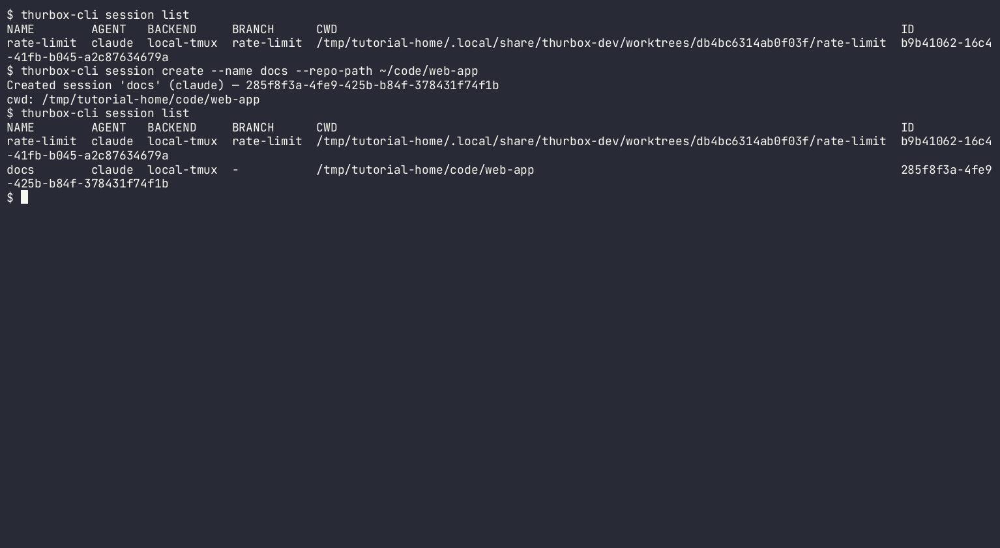
thurbox-cli config show prints every resolved path,
thurbox-cli plugin dir prints the interface directory, and
thurbox-cli --help lists the rest (automation, task,
message, extension, editor, notify).
hosts.toml and sessions run there while the TUI stays local
(Configuration).
The screenshots on this page are generated. Regenerate them from a checkout with
scripts/demo/record-tutorial.sh, which drives the real TUI through the steps above.